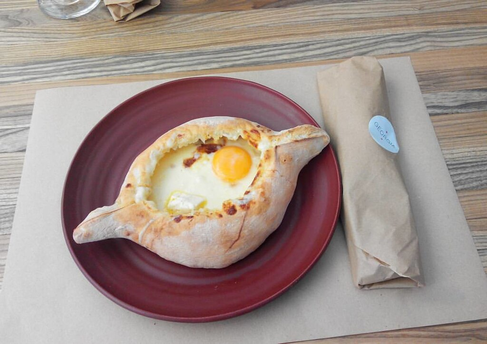

Khachapuri Recipe
Description

Khachapuri is a traditional Georgian dish of cheese-filled bread. The bread is leavened and allowed to rise,
molded into various shapes, and then filled in the center with a mixture of cheese (fresh or aged, most commonly, specialized khachapuri cheese),
eggs, and other ingredients.
It is popular in Georgia, both in restaurants and as street food. As a Georgian staple food, the price of making khachapuri is used as a measure of
inflation in different Georgian cities by the "khachapuri index", developed by the International School of Economics at Tbilisi State University.It is Georgia's national dish,
included in the list of the intangible cultural heritage of Georgia. On the behalf and initiative of the Gastronomic Association of Georgia,
the 27th of February was announced as National Khachapuri Day, to celebrate Georgia's signature pastry as well as to promote its recognition internationally.
The khachapuri is served hot from the oven, otherwise it loses the taste of its unique cheese mixture and becomes bitter.
- 3 tablespoons (43g) unsalted butter
- 1 cup (227g) milk
- 1 1/2 teaspoons (6g) granulated sugar or 1 tablespoon (9g) non-diastatic malt powder
- 1/2 teaspoon coriander
- 1 1/2 teaspoons (9g) table salt
- 2 teaspoons instant yeast or active dry yeast
- 2 3/4 cups (330g) King Arthur Unbleached Bread Flour
- 2 cups (227g) mozzarella cheese or Muenster cheese, shredded
- 1/2 cup (113g) ricotta cheese
- 1/2 cup (57g) crumbled feta cheese
- 1 large egg
- 2 tablespoons (14g) King Arthur Unbleached Bread Flour
- 1/2 teaspoon table salt
- 1/2 to 1 teaspoon coarsely ground black pepper
- 2 tablespoons coarsely chopped flat-leaf parsley
- 2 tablespoons finely chopped chives
- 1 large egg beaten with 1 teaspoon water
- 4 large eggs, cold from the refrigerator
- 4 teaspoons (19g) butter
- To make the dough: Heat the butter and milk together
in a small saucepan or in the microwave until the butter melts.
- Place the sugar (or malt powder), coriander, and salt in a large bowl, and pour the hot milk over it, stirring to dissolve the sugar.
Cool to lukewarm, about 100°F to 110°F.
- Weigh your flour; or measure it by gently spooning it into a cup, then sweeping off any excess.
Stir in the yeast and flour, mixing until a shaggy mass forms. Cover with plastic wrap or a reusable bowl cover and let rest for 10 minutes.
- After the rest, knead until smooth; 8 to 10 minutes by hand, or 6 to 8 minutes at medium speed in a mixer.
Knead in an additional 1 to 2 tablespoons flour if the dough is uncomfortably sticky.
- Place the dough in a greased bowl, cover, and let rise for 1 to 1 1/2 hours, until it
increases in size by at least one third.
- To make the filling: Place all the ingredients in a large mixing bowl and beat to combine, or pulse everything together briefly with a food processor;
leave some bits of the cheese intact.
- To assemble: Line two baking sheets with parchment. Turn the risen dough out onto a lightly floured
surface and divide it into four equal pieces, about 150g each.
- Roll each piece into an oval shape about 10" long and 6" wide.
Cover with greased plastic wrap, and let rest for 15 minutes.
- Spoon one quarter of the cheese mixture (about 119g) into the center of each and spread to within 1" of the edges.
- Pull the dough's edges up around the cheese, folding and twisting the ends to form a boat shape.
- Cover and let rise for 20 minutes, or until puffy but not doubled.
While the breads are rising, preheat the oven to 375°F with two racks toward the center.
- Brush the exposed edges of the khachapuri with the egg wash and bake for 15 to 20 minutes, until they feel set;
they won't have started to brown nor will the filling be bubbly, but don't worry; they're going to continue to bake once you add their egg-and-butter garnish.
- Remove from the oven and use the back of a spoon to make an indentation about 3" across in the
filling of each khachapuri. Crack an egg into each, place a teaspoon of butter on top, and bake for an additional 8 to 10 minutes (for soft-set eggs), or 12 to 15 minutes (for firmer eggs).
- Remove from the oven and serve warm. Garnish with additional fresh herbs, if desired.
- Storage information: Store any leftover khachapuri, well wrapped, in the refrigerator for up to five days.